Less Volume, More Creativity – Getting Started with the mosaic Package
Randall Pruim (updated by Nicholas Horton)
2023-11-10
Source:vignettes/web-only/LessVolume-MoreCreativity.Rmd
LessVolume-MoreCreativity.RmdProject MOSAIC and the mosaic package
NSF-funded project to develop a new way to introduce mathematics, statistics, computation and modeling to students in colleges and universities.
more information at mosaic-web.org
-
the
mosaicpackage is available via
A note about this document
This document was originally created as an R presentation to be used
as slides accompanying various presentations. It has been converted into
a more traditional document for use as a vignette in the
mosaic package.
The examples below use the mosaic and
mosaicData packages. An earlier version of this document
used lattice graphics, but it has been updated to use
ggformula
Less Volume, More Creativity
Many of the guiding principles of the mosaic package
reflect the “Less Volume, More Creativity” mantra of Mike McCarthy who
had a large poster with those words placed in the “war room” (where
assistant coaches decide on the game plan for the upcoming opponent) as
a constant reminder not to add too much complexity to the game plan.

|
A lot of times you end up putting in a lot more volume, because you are
teaching fundamentals and you are teaching concepts that you need to put
in, but you may not necessarily use because they are building blocks for
other concepts and variations that will come off of that … In the
offseason you have a chance to take a step back and tailor it more
specifically towards your team and towards your players.” Mike McCarthy, former Head Coach, Green Bay Packers |

Less Volume, More Creativity in R
One key to successfully introducing R is finding a set of commands that is
- small: fewer is better
- coherent: commands should be as similar as possible
- powerful: can do what needs doing
It is not enough to use R, it must be used elegantly.
Two examples of this principle:
- the mosaic package
- the dplyr package (Hadley Wickham)
Minimal R
Goal: a minimal set of R commands for Intro Stats
Result: Minimal R Vignette
(vignette("MinimalR"))
Much of the work on the mosaic package has been
motivated by
- The Less Volume, More Creativity approach
- The Minimal R goal
The Most Important Template
The following template is important because we can do so much with it.
goal ( yyy ~ xxx , data = mydata )
It is useful to name the components of the template:
goal ( y ~ x , data = mydata )
We’re hiding a bit of complexity in the template, and there will be
times that we will want to gussy things up a bit. We’ll indicate that by
adding ... to the end of the template. Just don’t let
... become a distractor early on.
goal ( y ~ x , data = mydata , …)
2 Questions
Using the template generally requires answering two questions. (These questions are useful in the context of nearly all computer tools, just substitute “the computer” in for R in the questions.)
goal ( y ~ x , data = mydata )
How do we make this plot? (Questions)

How do we make this plot? (Answers)
What does R need to know?
- which variable goes where (
births ~ date) - which data set (
data = Births78)- use
?Births78for documentation
- use
Your turn: How do you make this plot?
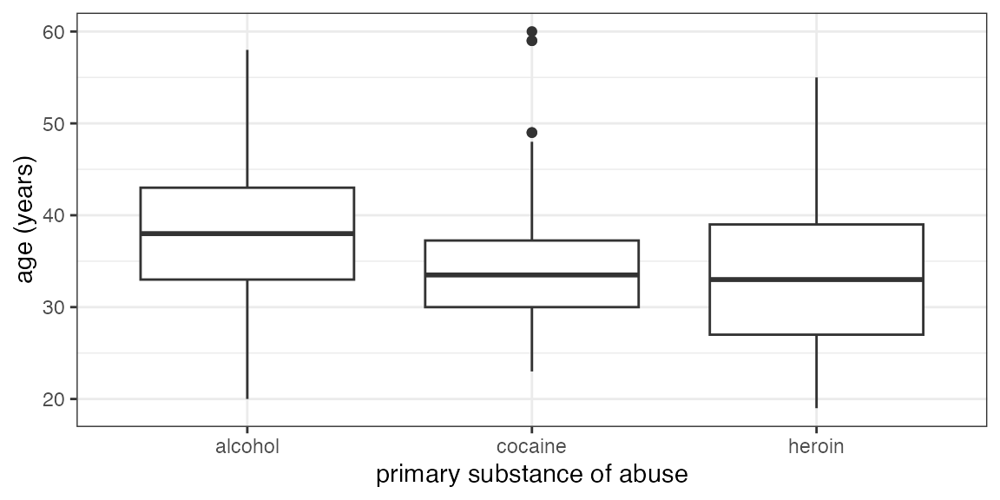
Some things you will need to know:
Command:
gf_boxplot()The data:
HELPrct
- Variables:
age,substance - use
?HELPrctfor info about data
Your turn: How about this one?
## Warning: This function has been deprecated. Use gf_boxplot() instead. See `?ggstance'.Some things you will need to know:
Command:
gf_boxploth()for horizontal boxplots-
The data:
HELPrct- Variables:
age,substance - use
?HELPrctfor info about data
- Variables:
Answer
gf_boxploth(substance ~ age, data = HELPrct)## Warning: This function has been deprecated. Use gf_boxplot() instead. See `?ggstance'.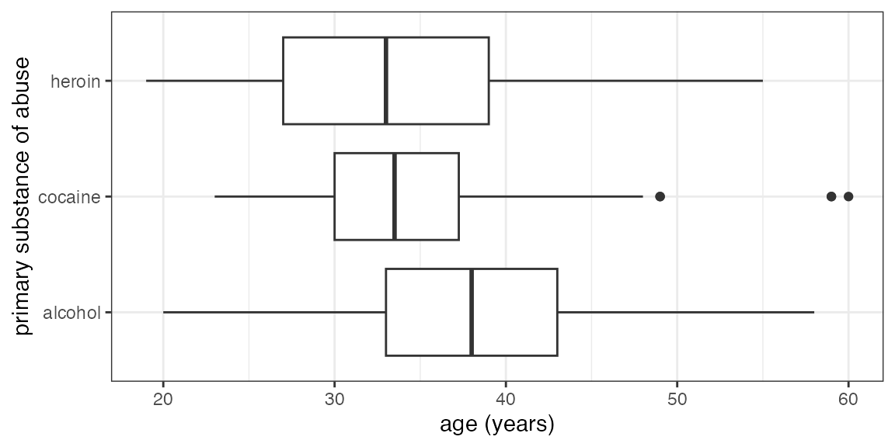
Note that we have reversed which variable is mapped to the x-axis and
which to the y-axis by reversing their order in the formula and using
gf_boxploth() instead of gf_boxplot().
Graphical Summaries: One Variable
gf_histogram(~ age, data = HELPrct) Note: When there is one variable it is on the right side of the formula.
Graphical Summaries: Overview
Your turn
Create a plot of your own choosing with one of these data sets
names(KidsFeet) # 4th graders' feet
?KidsFeet
names(Utilities) # utility bill data
?Utilitiesgroups and panels
Add
color = ~group orfill = ~group to overlay with different colors.Use
y ~ x | zto create multipanel plots.
Here is an example.
gf_density( ~ age | sex, data = HELPrct, fill = ~ substance)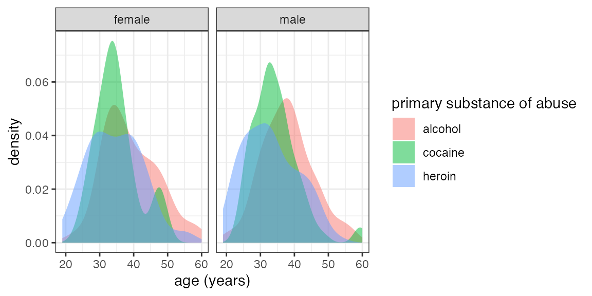
Beginners can create plots with 3 or 4 variables easily and quickly using this template.
Bells & Whistles
The ggformula graphics system includes lots of bells and
whistles including
- titles
- axis labels
- colors
- sizes
- transparency
- etc, etc.
I used to introduce these too early. My current approach:
- Let the students ask or
- Let the data analysis drive
An example with some bells and whistles
library(lubridate)
Births78 <- Births78 %>%
mutate(weekday = wday(date, label = TRUE, abbr = TRUE))
gf_line(births ~ date, color = ~ weekday, data = Births78)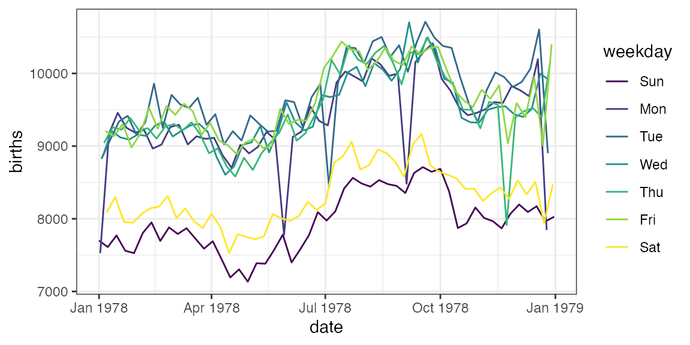
Notes
-
wday()is in thelubridatepackage - This version of the plot reveals a clear weekend (and holiday) pattern. Typically, I like to have students conjecture about the “double wave” pattern and see if we can build plots to test their conjectures.
Numerical Summaries
The mosaic package provides functions that make it
simple to create numerical summaries using the same template used for
graphing (and later for describing linear models).
Numerical Summaries: One Variable
Big idea:
- Replace plot name with summary name
- Nothing else changes
gf_histogram( ~ age, data = HELPrct) # binwidth = 5 (or 10) might be good here
mean( ~ age, data = HELPrct)## [1] 35.65342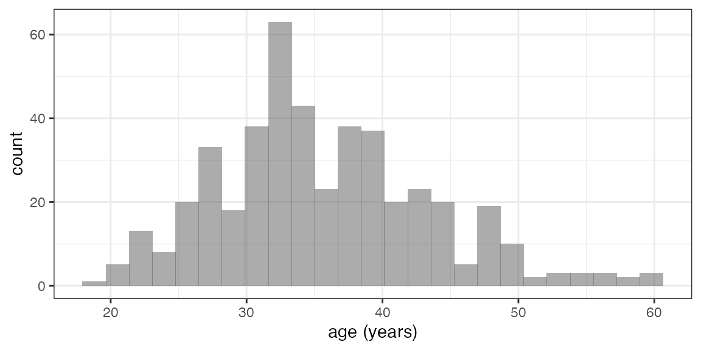
Other summaries
The mosaic package includes formula aware versions of
mean(), sd(), var(),
min(), max(), sum(),
IQR(), …
Also provides favstats() to compute our favorites.
favstats( ~ age, data = HELPrct)## min Q1 median Q3 max mean sd n missing
## 19 30 35 40 60 35.65342 7.710266 453 0favstats() quickly becomes a go-to function in our
courses.
df_stats() is similar, but
- stores the results in a data frame
- can be used to make custom summary tables
df_stats( ~ age, data = HELPrct)## response min Q1 median Q3 max mean sd n missing
## 1 age 19 30 35 40 60 35.65342 7.710266 453 0
df_stats( ~ age, data = HELPrct, mean, sd, median, iqr)## response mean sd median iqr
## 1 age 35.65342 7.710266 35 10Tallying
tally(~ sex, data = HELPrct)## sex
## female male
## 107 346
tally(~ substance, data = HELPrct)## substance
## alcohol cocaine heroin
## 177 152 124
df_stats(~ substance, data = HELPrct, counts, props)## response n_alcohol n_cocaine n_heroin prop_alcohol prop_cocaine prop_heroin
## 1 substance 177 152 124 0.3907285 0.3355408 0.2737307Numerical Summaries: Two Variables
There are three ways to think about this. All do the same thing.
sd(age ~ substance, data = HELPrct)
sd(~ age | substance, data = HELPrct)
sd(~ age, groups = substance, data = HELPrct)
# note option color = ~ substance is used for graphics## alcohol cocaine heroin
## 7.652272 6.692881 7.986068This makes it possible to easily convert three different types of plots into the (same) corresponding numerical summary.
df_stats() can also be used with multiple variables and
provides a different output format.
df_stats(age ~ substance, data = HELPrct, sd) ## response substance sd
## 1 age alcohol 7.652272
## 2 age cocaine 6.692881
## 3 age heroin 7.986068Numerical Summaries: Tables
2-way tables are just tallies of 2 variables.
tally(sex ~ substance, data = HELPrct)## substance
## sex alcohol cocaine heroin
## female 36 41 30
## male 141 111 94
tally( ~ sex + substance, data = HELPrct)## substance
## sex alcohol cocaine heroin
## female 36 41 30
## male 141 111 94
df_stats(sex ~ substance, data = HELPrct, counts)## response substance n_female n_male
## 1 sex alcohol 36 141
## 2 sex cocaine 41 111
## 3 sex heroin 30 94Other output formats are available
tally(sex ~ substance, data = HELPrct, format = "proportion")## substance
## sex alcohol cocaine heroin
## female 0.2033898 0.2697368 0.2419355
## male 0.7966102 0.7302632 0.7580645
tally(substance ~ sex, data = HELPrct, format = "proportion", margins = TRUE)## sex
## substance female male
## alcohol 0.3364486 0.4075145
## cocaine 0.3831776 0.3208092
## heroin 0.2803738 0.2716763
## Total 1.0000000 1.0000000
tally(~ sex + substance, data = HELPrct, format = "proportion", margins = TRUE)## substance
## sex alcohol cocaine heroin Total
## female 0.07947020 0.09050773 0.06622517 0.23620309
## male 0.31125828 0.24503311 0.20750552 0.76379691
## Total 0.39072848 0.33554084 0.27373068 1.00000000
tally(sex ~ substance, data = HELPrct, format = "percent")## substance
## sex alcohol cocaine heroin
## female 20.33898 26.97368 24.19355
## male 79.66102 73.02632 75.80645
df_stats(sex ~ substance, data = HELPrct, props, percs)## response substance prop_female prop_male perc_female perc_male
## 1 sex alcohol 0.2033898 0.7966102 20.33898 79.66102
## 2 sex cocaine 0.2697368 0.7302632 26.97368 73.02632
## 3 sex heroin 0.2419355 0.7580645 24.19355 75.80645More examples
mean(age ~ substance | sex, data = HELPrct)## A.F C.F H.F A.M C.M H.M F M
## 39.16667 34.85366 34.66667 37.95035 34.36036 33.05319 36.25234 35.46821
mean(age ~ substance | sex, data = HELPrct, .format = "table")## substance sex mean
## 1 A F 39.16667
## 2 A M 37.95035
## 3 C F 34.85366
## 4 C M 34.36036
## 5 H F 34.66667
## 6 H M 33.05319- I’ve abbreviated some labels to make things fit better. You can do
this using
mutate()(in thedplyrpackage) ortransform(). - This also works for
median(),min(),max(),sd(),var(),favstats(), etc.
One Template to Rule a Lot
This master template can be used to do a large portion of what needs doing in an Intro Stats course.
- single and multiple variable graphical summaries
- single and multiple variable numerical summaries
- linear models
## female male
## 36.25234 35.46821## (Intercept) sexmale
## 36.2523364 -0.7841284It can be learned early and practiced often so that students become secure in their ability to use these functions.
Some other things
The mosaic package includes some other things, too
- data sets (they have now been moved to separate
mosaicDataandNHANESpackages) - xtras:
xchisq.test(),xpnorm(),xqqmath()- these functions add a bit of extra output to the similarly named
functions that don’t have a leading
x
- these functions add a bit of extra output to the similarly named
functions that don’t have a leading
-
mplot()-
mplot(HELPrct)interactive plot creation - replacements for
plot()in some situations
-
- simplified
gf_histogram()controls (e.g.,binwidth) - simplified ways to add onto lattice plots
(
gf_refine())
Examples
xpnorm(700, mean = 500, sd = 100)## ## If X ~ N(500, 100), then## P(X <= 700) = P(Z <= 2) = 0.9772## P(X > 700) = P(Z > 2) = 0.02275## 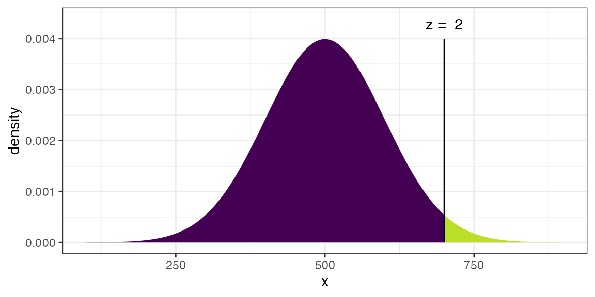
## [1] 0.9772499## ## If X ~ N(500, 100), then## P(X <= 300) = P(Z <= -2) = 0.02275 P(X <= 700) = P(Z <= 2) = 0.97725## P(X > 300) = P(Z > -2) = 0.97725 P(X > 700) = P(Z > 2) = 0.02275## 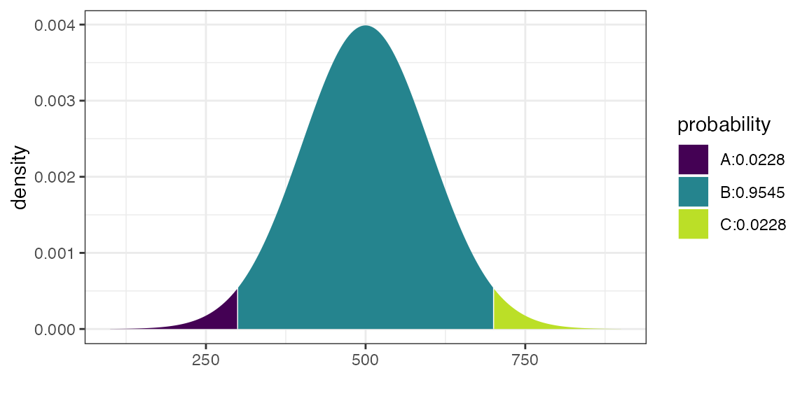
## [1] 0.02275013 0.97724987
xchisq.test(phs)##
## Pearson's Chi-squared test with Yates' continuity correction
##
## data: x
## X-squared = 24.429, df = 1, p-value = 7.71e-07
##
## 104.00 10933.00
## ( 146.52) (10890.48)
## [12.05] [ 0.16]
## <-3.51> < 0.41>
##
## 189.00 10845.00
## ( 146.48) (10887.52)
## [12.05] [ 0.16]
## < 3.51> <-0.41>
##
## key:
## observed
## (expected)
## [contribution to X-squared]
## <Pearson residual>Modeling
Modeling is really the starting point for the mosaic
design.
- linear models (
lm()andglm()) defined the template -
latticegraphics use the template (so we choselattice) - we added functionality so numerical summaries can be done with the same template
- additional things added to make modeling easier for beginners
Models as Functions
model <- lm(width ~ length * sex,
data = KidsFeet)
Width <- makeFun(model)
Width(length = 25, sex = "B")## 1
## 9.167675
Width(length = 25, sex = "G")## 1
## 8.939312Once models have been converted into functions, we can easily add
them to our plots using plotFun().
gf_point(width ~ length, data = KidsFeet,
color = ~ sex) %>%
gf_fun(Width(length, sex = "B") ~ length, color = ~"B") %>%
gf_fun(Width(length, sex = "G") ~ length, color = ~"G")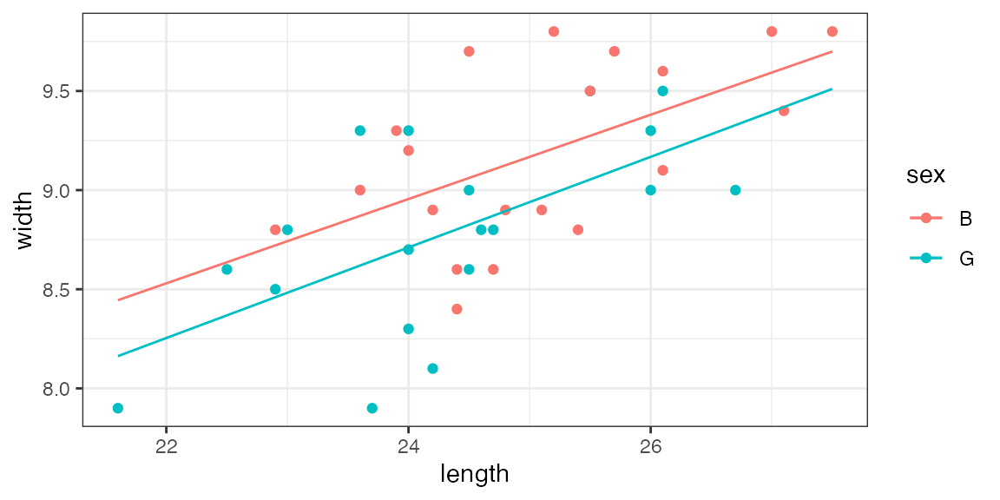
Resampling – You can do() it!
If you want to teach using randomization tests and bootstrap
intervals, the mosaic package provides some functions to
simplify creating the random distirubtions involved.
An example: The Lady Tasting Tea
Often used on first day of class
-
Story
woman claims she can tell whether milk has been poured into tea or vice versa.
Question: How do we test this claim?
We use rflip() to simulate flipping coins
rflip()##
## Flipping 1 coin [ Prob(Heads) = 0.5 ] ...
##
## H
##
## Number of Heads: 1 [Proportion Heads: 1]Note: We do this with students who do not (yet) know
what a binomial distribution is, so we want to avoid using
rbinom() at this point.
Rather than flip each coin separately, we can flip multiple coins at once.
rflip(10)##
## Flipping 10 coins [ Prob(Heads) = 0.5 ] ...
##
## H H H T T T H H H T
##
## Number of Heads: 6 [Proportion Heads: 0.6]- easier to consider
heads= correct;tails= incorrect than to compare with a given pattern- this switch bothers me more than it bothers my students
Now let’s do that a lot of times
rflip(10) simulates 1 lady tasting 10 cups 1 time.
We can do that many times to see how guessing ladies do:
## n heads tails prop
## 1 10 6 4 0.6
## 2 10 5 5 0.5-
do()is clever about what it remembers (in many common situations) - 2 isn’t many – we’ll do many next – but it is a good idea to take a look at a small example before generating a lot of random data.
Now let’s simulate 5000 guessing ladies
## n heads tails prop
## 1 10 4 6 0.4
## 2 10 7 3 0.7
gf_histogram(~ heads, data = Ladies, binwidth = 1)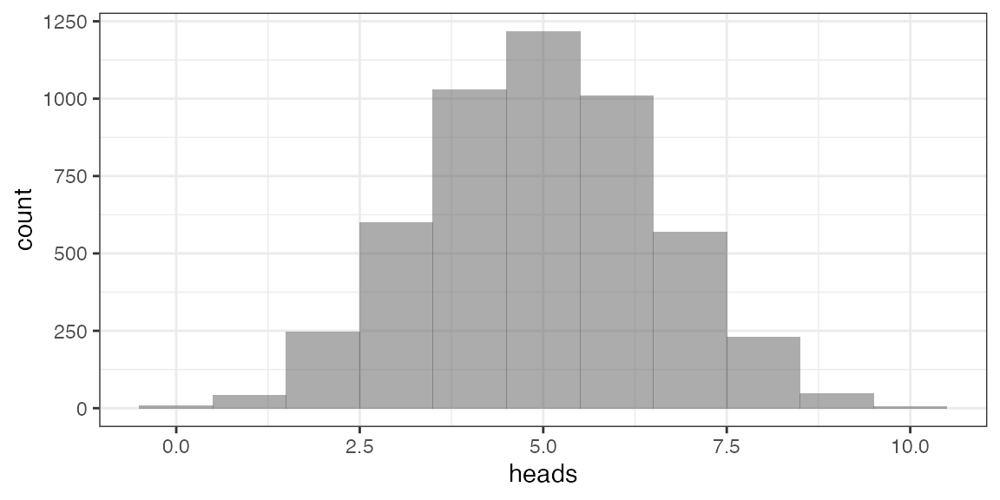
Q. How often does guessing score 9 or 10?
Here are 3 ways to find out
tally( ~ (heads >= 9), data = Ladies)## (heads >= 9)
## TRUE FALSE
## 52 4948
tally( ~ (heads >= 9), data = Ladies, format = "prop")## (heads >= 9)
## TRUE FALSE
## 0.0104 0.9896
prop( ~ (heads >= 9), data = Ladies)## prop_TRUE
## 0.0104A general approach to randomization
The Lady Tasting Tea illustrates a 3-step process that can be reused in many situations:
- Do it for your data
- Do it for “random” data
- Do it lots of times for “random” data
- definition of “random” is important, but can often be handled by the
mosaicfunctionsshuffle()orresample()
Example: Do mean ages differ by sex?
diffmean(age ~ sex, data = HELPrct)## diffmean
## -0.7841284## diffmean
## 1 0.09686133## prop_TRUE
## 0.3412
gf_histogram( ~ diffmean, data = Null) %>%
gf_vline(xintercept = -0.7841) ## Warning: geom_vline(): Ignoring `mapping` because `xintercept` was provided.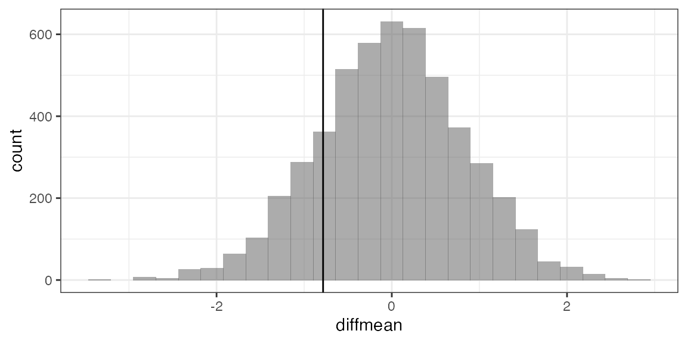
Example: Bootstrap CI for difference in means
Bootstrap <- do(5000) *
diffmean(age ~ sex, data = resample(HELPrct))
gf_histogram( ~ diffmean, data = Bootstrap) %>%
gf_vline(xintercept = -0.7841)## Warning: geom_vline(): Ignoring `mapping` because `xintercept` was provided.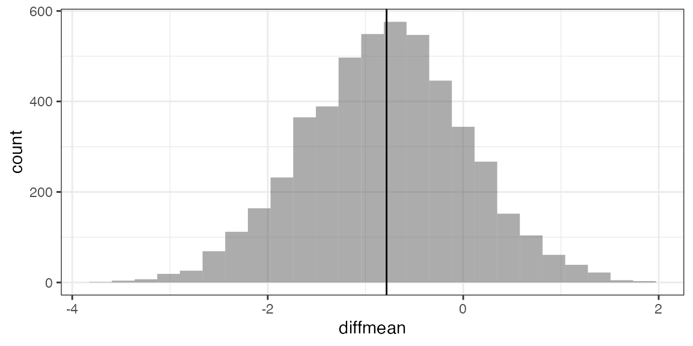
cdata( ~ diffmean, data = Bootstrap, p = 0.95)## lower upper central.p
## 2.5% -2.438299 0.8177243 0.95
confint(Bootstrap, method = "quantile")## name lower upper level method estimate
## 1 diffmean -2.438299 0.8177243 0.95 percentile -0.7841284
confint(Bootstrap) # default uses bootstrap st. err.## name lower upper level method estimate
## 1 diffmean -2.438299 0.8177243 0.95 percentile -0.7841284Randomization and linear models
## Intercept length sigma r.squared F numdf dendf .row .index
## 1 2.862276 0.2479478 0.3963356 0.4110041 25.81878 1 37 1 1## Intercept length sigma r.squared F numdf dendf .row .index
## 1 6.347607 0.10697295 0.4962778 0.076502169 3.0650643 1 37 1 1
## 2 9.877910 -0.03582090 0.5142048 0.008578250 0.3201415 1 37 1 2
## 3 9.840434 -0.03430504 0.5143891 0.007867588 0.2934092 1 37 1 3## Intercept length sexG sigma r.squared F numdf dendf .row .index
## 1 3.641168 0.221025 -0.2325175 0.3848905 0.4595428 15.30513 2 36 1 1## Intercept length sexG sigma r.squared F numdf dendf .row .index
## 1 3.068833 0.2378303 0.08945102 0.3993335 0.4182207 12.93957 2 36 1 1
## 2 2.916037 0.2478853 -0.10717940 0.3979148 0.4223471 13.16058 2 36 1 2
## 3 3.351286 0.2334825 -0.26968267 0.3770203 0.4814193 16.71013 2 36 1 3
Null <- do(5000) *
lm(width ~ length + shuffle(sex),
data = KidsFeet)
gf_histogram( ~ sexG, data = Null, boundary = -0.2325) %>%
gf_vline(xintercept = -0.2325)## Warning: geom_vline(): Ignoring `mapping` because `xintercept` was provided.
gf_histogram(~ sexG, data = Null, boundary = -0.2325) %>%
gf_vline(xintercept = -0.2325)## Warning: geom_vline(): Ignoring `mapping` because `xintercept` was provided.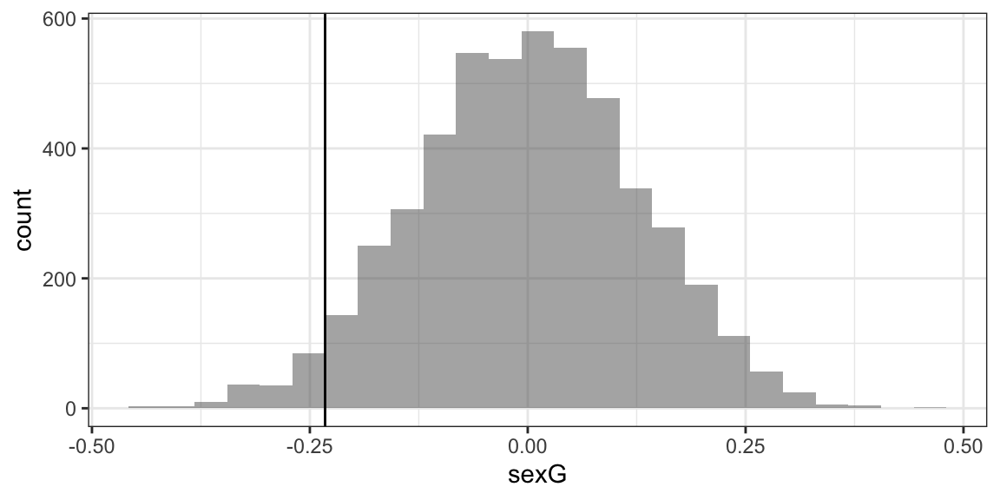
prop(~ (sexG <= -0.2325), data = Null)## prop_TRUE
## 0.0344Want to learn more?
More mosaic resources can be found at https://www.mosaic-web.org/mosaic/articles/mosaic-resources.html.
The RJournal paper entitled “mosaic Package: Helping Students to `Think with Data’ Using R (https://journal.r-project.org/archive/2017/RJ-2017-024/index.html) provides further discussion of the mosaic modeling language and approach to teaching.